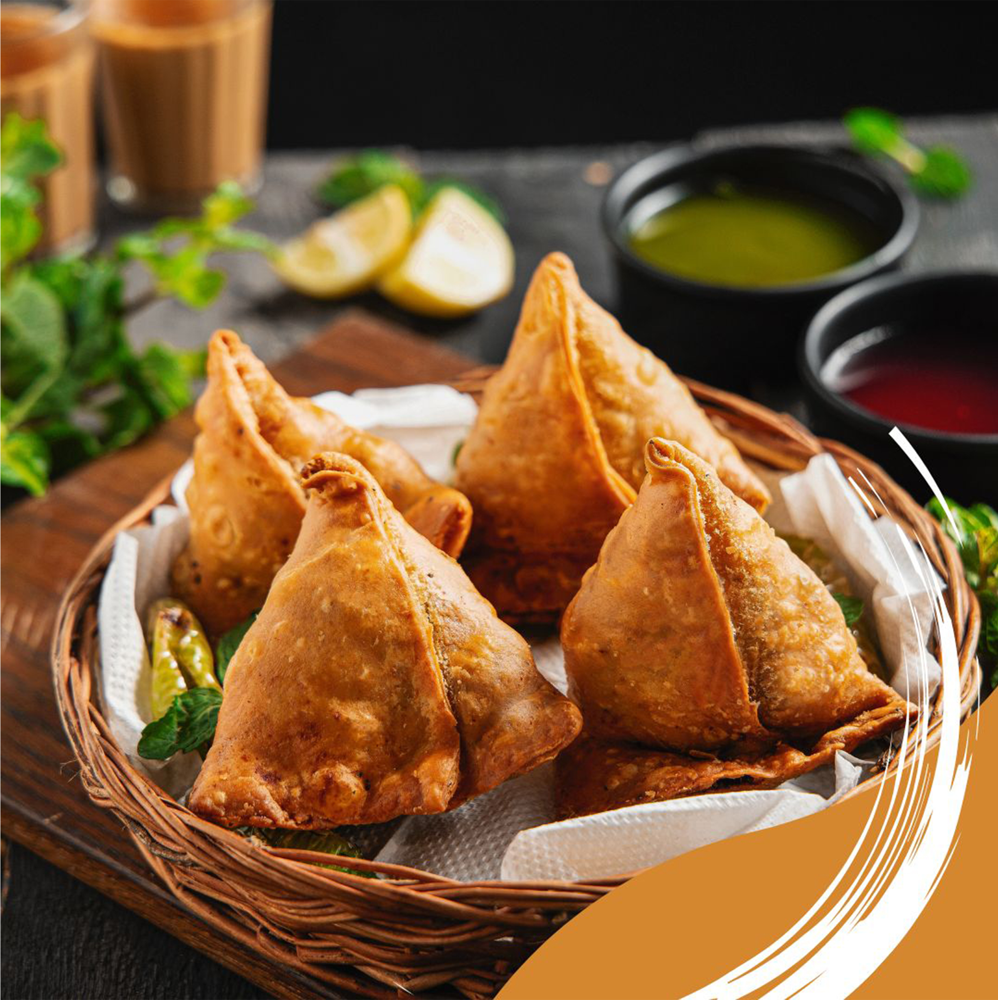
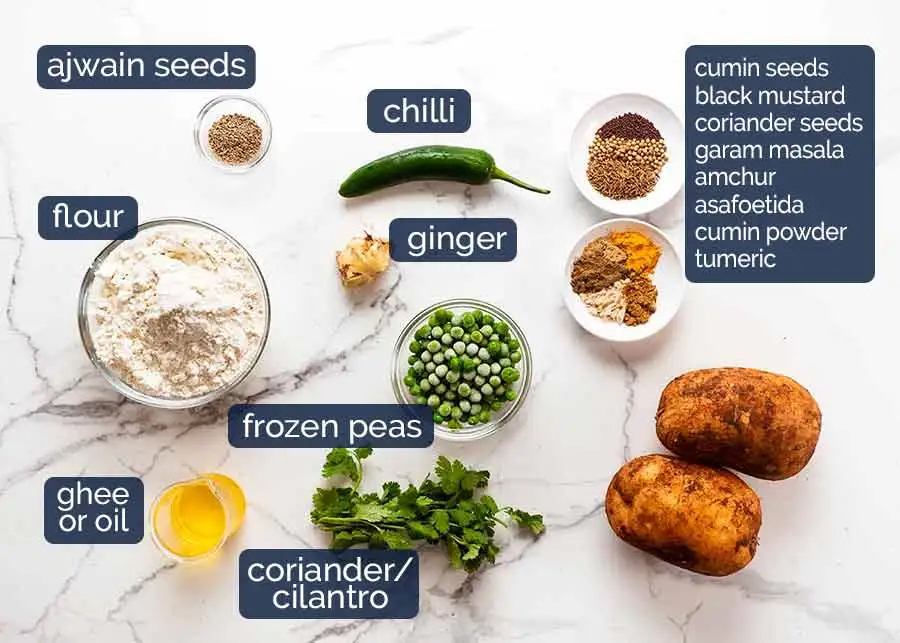
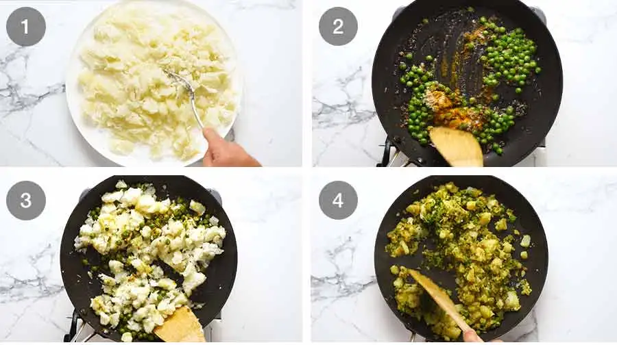
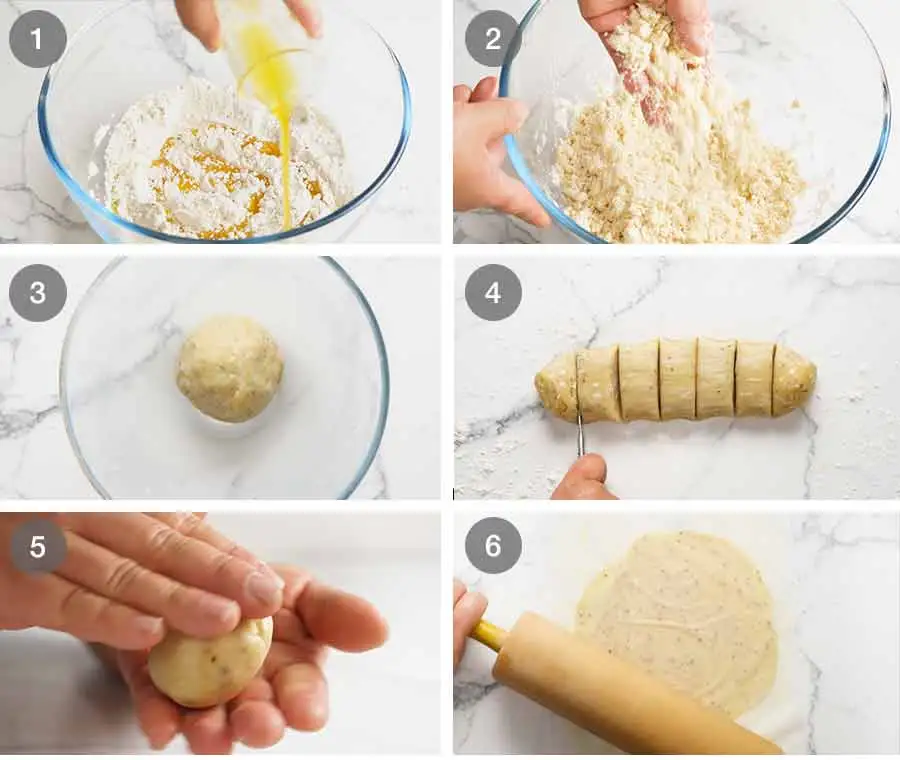
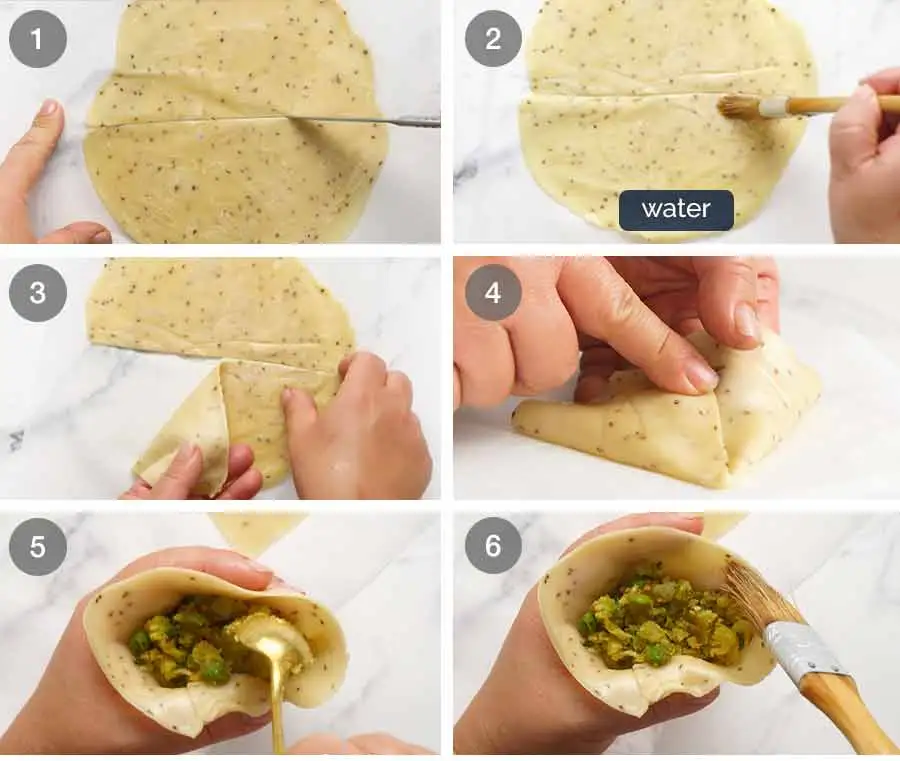
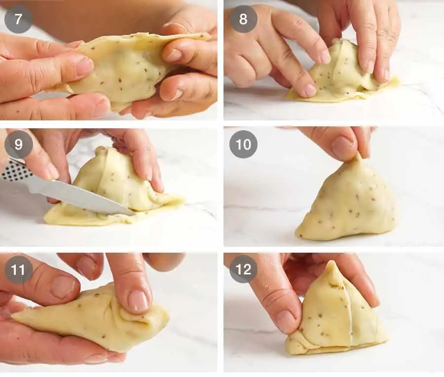
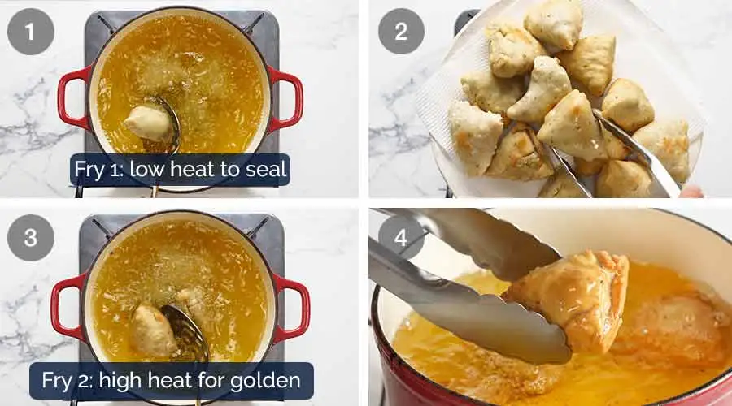
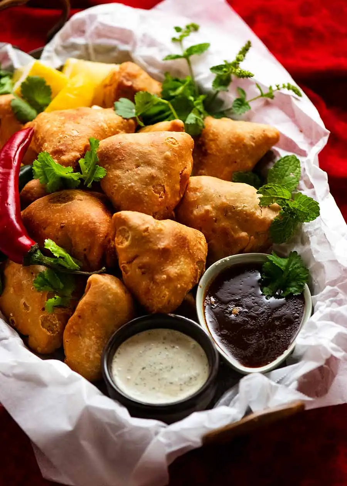

Samosa
The Most Delicious Food!

Photo by Karthikeyan Anand - Pexels - CC0
Samosas are a tasty fried food. You can easily notice it through its iconic Triangle Shape. The samosa is a popular snack with a rich cultural background. It originated in the Middle East and Central Asia. It is a pastry with a savoury filling, which may include ingredients such as spiced potatoes, onions, peas, meat or even fish.
The Samosa Recipe Website
List of Ingredients

Photo by Nagi - recipetineats - CC0
Dough
| Ingredients |
Amount |
| Flour, Plain/All Purpose |
1 & 1/2 cups |
| Ajwain Seeds |
1 tsp |
| Salt |
1/2 tsp |
| Ghee (Melted and Cooled) OR Vegetable Oil |
4 tbsp |
| Cold Water |
6 tbsp |
Potato Filling
- 500g/1 potatoes, starchy/all-rounder
- 2 tbsp vegetable/canola oil
- 1 tsp cumin seeds
- 1/4 tsp black mustard seeds
- 1/2 tsp coriander seeds
- 1 tbsp fresh ginger, finely grated
- 1 tbsp green chilli,finely chopped (serrano or cayenne)
- 1/2 cup frozen green peas (thawed)
- 1 tsp garam masala
- 1/4 tsp amchur
- 1/2 tsp asafoetida
- 1/4 tsp cumin powder
- 1/2 tsp turmeric powder
- 1 tsp salt
- 2 tbsp coriander/cilantro leaves
Frying
- 1 litre of Vegetable/Canola oil
Cooking Instructins
Potato Filling

Photo by Nagi - recipetineats - CC0
- Boil potato: Peel and then cut potatoes in half. Place in a
pot of cold water, bring to boil then cook until very soft, ~10 minutes.
- Mash roughly: Remove the potatoes onto a plate and roughly mash with a fork,
leaving some large chunks
- Cook spice seeds: Heat oil in a large skillet over medium heat. Add the cumin seeds, mustard seeds & coriander
seeds. Stir the spices for about 30 seconds or until fragrant.
- Add the ginger, chilli, and peas: Continue to stir a further minute or so until the chilli is soft.
- Add remaining spices: Add the garam masala, amchur, asafoetida, cumin powder, turmeric and salt. Cook a
further 30 seconds.
- Add potato and gently stir to coat in spices for about 1 minute.
- Cool: Remove from the stove, stir in chopped coriander leaves. Spread potato mixture out on a plate and let it
cool completely before using.
Samosa Dough
"
Photo by Nagi - recipetineats - CC0
- Mix dry ingredients: Place the flour, salt and ajwain seeds into a bowl and stir to combine.
- Rub ghee into flour: Add the ghee or oil and mix with your fingertips until the dough resembles breadcrumbs.
- Form a ball: Add the water and mix with the flour until you form a ball of dough. It should be pliable and
soft, but not so sticky it sticks to your hands.
- Rest 30 minutes: Cover the dough in the bowl with glad wrap and leave to rest for 30 minutes.
Making the Samosas

Photo by Nagi - recipetineats - CC0
- Cut into 6: Cut the dough into 6 equal portions, then roll each into a ball. Keep the balls on a plate covered
with cling wrap so they don't dry out.
- Place between paper: Place one ball on a sheet of parchment/baking paper. Press down to flatten, then cover
with another sheet of paper. Do not flour the work surface – it will dry the pastry out.
- Roll out: Roll the dough into a disc about 2mm / 1/10" thick.
- Cut in half: Cut through the centre to create two semicircles (2 samosas per disc).
- Make cone: Brush the straight side with water, then fold straight edge to join itself and form a cone. Overlap
the edges by about 1 cm / 2/5" then press edges to seal.
- Fill with potato: Make an "O" with your forefinger and thumb, then hold the cone in the "O". Fill with about 2
tbsp of Potato Mixture, lightly pressing in.

Photo by Nagi - recipetineats - CC0
- Seal: Brush the open pastry edge with water, then press together so your Samosa is fully sealed. Place sealed
edge down on work surface and press down to fold. Trim off excess pastry, fold in corners. Pinch the top corner
to make it pointy.
- Repeat with remaining Samosas. You should make 12 in total.
Frying

Photo by Nagi - recipetineats - CC0
- Heat oil to medium: In a deep pan or pot, heat 5cm / 2" oil to 160°C/320°F
- Fry 1: Carefully drop 3 – 4 samosas in the oil and cook for 3 minutes, moving them around occasionally.
- Drain and repeat: Remove from the oil and drain on paper towels. Repeat with the remaining samosas.
- Increase oil heat: Increase the oil temperature up to 190°C/375°F.
- Fry 2: Carefully place 3 – 4 samosas at the time into the oil, and cook for 1 1/2 to 2 minutes until they are
deep golden. Remove from the oil and drain on paper towels. Repeat with remaining Samosas.
- Serve hot with a sauce of your liking and enjoy!
"
Photo by Nagi - recipetineats - CC0